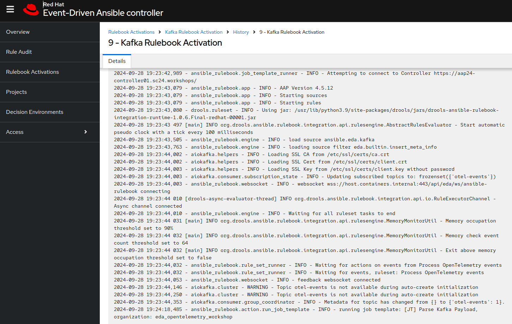

Summit Connect Madrid 2024 - Event-Driven Ansible MicroLab En este punto, nuestra instancia de Event-Driven Ansible ya debería de haber detectado el nuevo mensaje de alerta en el topic de kafka. Puedes acceder a ella utilizando tus credenciales y desde el enlace Event-Driven Ansible de la barra superior derecha. Event-Driven Ansible utiliza event plugins que nos ayudan a escuchar o recibir eventos desde diferentes sistemas. Para este caso de uso, estamos utilizando un event plugin que sirve para leer mensajes desde un topic de una instancia kafka. Una vez se detecta un evento, se aplican diferentes condiciones dependiendo de los datos recibidos y se ejecuta una acción. Estas acciones se ejecutan a través de action plugins. Diferentes acciones pueden ser: escribir un mensaje, crear una variable o por ejemplo, ejecutar un trabajo en nuestro Ansible Controller, que es lo que haremos en este caso. Este flujo, se define a través de un componente llamado Ansible Rulebook y que es ejecutado por nuestra instancia de Event-Driven Ansible como un proceso que corre de manera constante. Este fichero, se almacena en un repositorio y se descarga en nuestro controlador utilizando un proyecto. En nuestro caso, el fichero se ve mas o menos así: - name: Process OpenTelemetry events hosts: localhost sources: - ansible.eda.kafka: host: kafka01.summitconnect.local port: 9093 topic: otel-events security_protocol: SSL cafile: /etc/ssl/certs/ca.crt certfile: /etc/ssl/certs/client.crt keyfile: /etc/ssl/certs/client.key check_hostname: false rules: - name: Trigger remediation condition: event.body != "" action: run_job_template: name: "[JT] Parse Kafka Payload" organization: eda_opentelemetry_workshop job_args: extra_vars: kafka_message: "{{ event }}" La primera sección sources, utiliza el source plugin ansible.eda.kafka para leer el topic otel-events de una instancia de Apache Kafka específica. Se configuran una serie de certificados para hacer la conexión mas segura. La segunda sección rules, utilizada el plugin run_job_template para ejecutar un trabajo en nuestro Ansible Controller llamado [JT] Parse Kafka Payload. Como condición, estamos especificando que el cuerpo del mensaje recibido nunca debe estar vacío. Este rulebook se ejecutará sobre un contenedor que contiene todo lo necesario llamado decision environment, que controlamos a través de un proceso que denominamos activation job. Puedes explorar los distintos componentes desde la interfaz de Event-Driven Ansible. Observa el log de la ejecución del rule book accediendo a Rulebook Activations / Kafka Rulebook Activation / History y pinchando sobre el job correspondiente que esté en estado "running". Puedes observar el log y si haces scroll hasta abajo, deberías ver como un evento ha sido recibido y se ha enviado una llamada al Ansible Controller.  3.3. Comprobar Alertmanager 3.5. Comprobar Ansible Controller